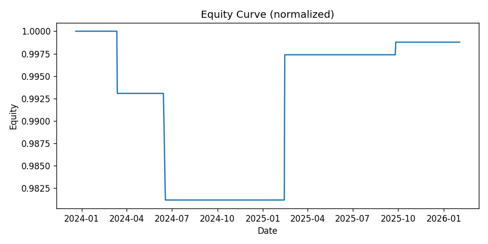
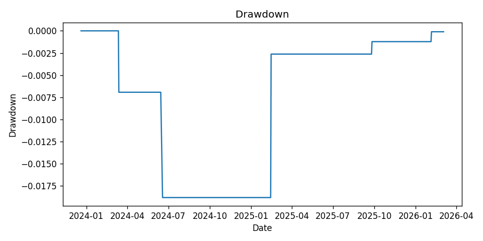

Fully mechanical backtest of a Price-Time / Price-Date Squaring system inspired by W.D. Gann, applied to DOMS daily data from 20-12-2023 to 16-01-2026.
For DOMS, the system generated 5 trades over the full sample, averaging about 2.4 trades per year. The typical holding period is around 16.2 bars. With a win rate of 40.0% and an average outcome of -0.04R per trade, the equity curve grows at roughly -0.2% CAGR while suffering a maximum drawdown of -1.9%. Overall, this behaves like a very selective, long-term system, with very conservative risk, designed more for research than raw returns.
Full price history with every Gann signal (square), entry and exit overlaid. Use zoom and pan to move horizontally and vertically through all trades.
Equity starts at 1.0 and changes based on realized R-multiples with 2% risk per trade.
Drawdown relative to running equity peak:
| # | Signal date | Entry date | Entry price | Exit date | Side | R | Square type | Exit reason | T(-1) | T | T+1 | T+2 | T+3 | T+4 | Early close | Margin neutral (pts) | Margin neutral (%) | Margin flip (pts) | Margin flip (%) | Chart |
|---|---|---|---|---|---|---|---|---|---|---|---|---|---|---|---|---|---|---|---|---|
| 1 | 2024-02-05 | 2024-02-06 | 1420.10 | 2024-03-13 | long | -0.35 | price_time | SL | 25.40 | 18.35 | 34.70 | 86.55 | 136.60 | 91.20 | View | |||||
| 2 | 2024-06-03 | 2024-06-04 | 1887.95 | 2024-06-18 | short | -0.60 | price_date | SL | 94.35 | 122.25 | 38.95 | -40.05 | -12.75 | 1.15 | View | |||||
| 3 | 2025-01-27 | 2025-01-28 | 2213.65 | 2025-02-14 | long | 0.83 | price_time | SL | 79.05 | 79.05 | 133.45 | 228.35 | 268.60 | 298.35 | View | |||||
| 4 | 2025-09-01 | 2025-09-02 | 2470.00 | 2025-09-26 | long | 0.07 | price_date | SL | 35.20 | 10.40 | 33.30 | 222.20 | 176.40 | 134.20 | View | |||||
| 5 | 2025-12-18 | 2025-12-19 | 2525.00 | 2026-01-09 | long | -0.16 | price_date | SL | 50.60 | 64.40 | 52.20 | 42.50 | 49.60 | 47.00 | View |